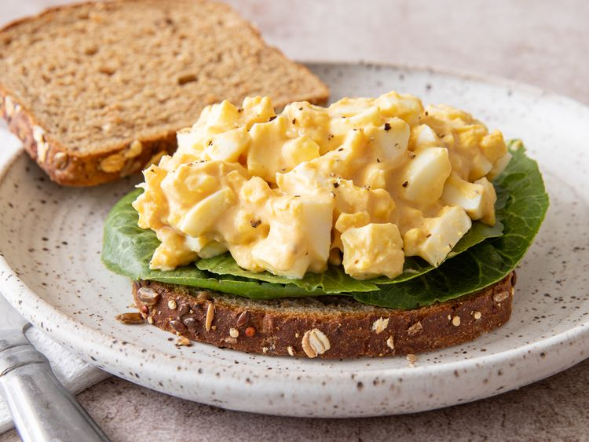

Home
Honey Mustard Egg Salad Recipe

Description
This honey mustard egg salad takes on a modern flavour twist with the addition of honey mustard and Greek yogurt. Serve as a traditional sandwich on your choice of bread or croissant, in pita pockets, low-carb lettuce wrap, or simply on a bed of fresh lettuce. For variation, add some sweet or dill pickle relish.
Ingredients
- 2 tablespoons honey mustard
- 1 tablespoon plain Greek yogurt (such as Fage 2%)
- 1/2 teaspoon white wine vinegar
- 3 large hard boiled eggs, peeled and coarsely chopped
- salt and freshly ground black pepper to taste
Steps
- Gather all ingredients.
- Combine honey mustard, yogurt, and vinegar in a small bowl.
- Fold in chopped eggs, and season with salt and pepper. Chill in the fridge in an airtight container.